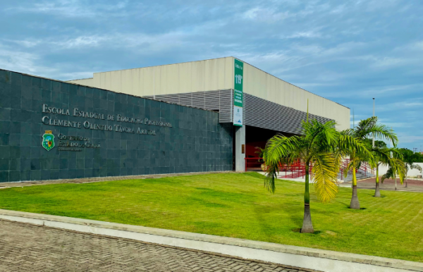

Inaugurada em 22 de março de 2018, a Escola Estadual de Educação Profissional (EEEP) Clemente Olintho Távora Arruda é a 119ª escola profissional do Estado do Ceará. Sua proposta curricular integra a Base Nacional Comum, a Base Diversificada e a Base Técnica, promovendo uma formação integral que contempla o desenvolvimento acadêmico, profissional e humano dos estudantes.
Localizada no município de Baturité, a instituição tem como missão oferecer uma educação pública de qualidade aos estudantes da região do Maciço de Baturité, proporcionando conhecimentos e oportunidades que favoreçam o ingresso no ensino superior e a inserção no mundo do trabalho.
Por meio de uma formação que articula conhecimentos gerais e técnicos, a EEEP Clemente Olintho Távora Arruda busca contribuir para o desenvolvimento de cidadãos preparados para os desafios da sociedade, reafirmando seu compromisso com a excelência educacional e a formação integral dos estudantes.
Clemente Olintho Távora Arruda, conhecido também como Olintho Arruda, nasceu em Fortaleza, no dia 31 de dezembro de 1925, e teve importante atuação na história do município de Baturité, no Ceará. Sobrinho de Ananias Arruda, pertenceu a uma família de reconhecida presença na história local.
Ex-combatente da Segunda Guerra Mundial, serviu na Marinha do Brasil e participou da Batalha do Atlântico, atuando em operações de combate a submarinos alemães ao longo do litoral brasileiro. Sua trajetória militar representa uma importante contribuição para a participação brasileira no conflito.
Na vida pública, exerceu o cargo de prefeito de Baturité entre 1983 e 1988, período em que se dedicou à administração municipal e à comunidade baturiteense.
Em reconhecimento à sua trajetória e aos serviços prestados à sociedade, seu nome foi atribuído à Escola Estadual de Educação Profissional Clemente Olintho Távora Arruda (EEEP), instituição comprometida com a qualidade do ensino, a formação profissional e o desenvolvimento acadêmico de seus estudantes, que se destacam em vestibulares e olimpíadas do conhecimento.
Clemente Olintho Távora Arruda permanece na memória de seus familiares e da comunidade de Baturité como uma figura associada ao civismo, à responsabilidade pública e à valorização da educação, representando um legado de dedicação à sociedade.